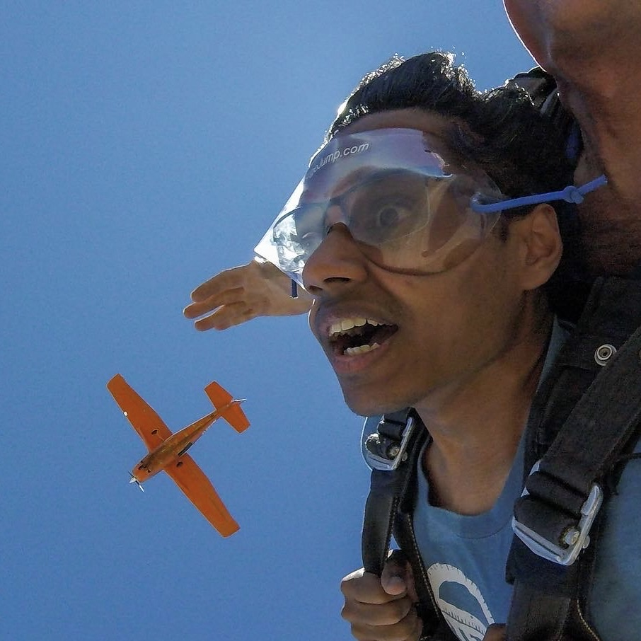

Nico van Wijk
nvanwijk@mit.edu
Nico is a senior in course 6-9 with relevant experience in leadership, logistics and management for the RSS team. He is also the CEO of SkyReachers - a productivity tool being incorporated into team 6's progress tracking.

Yatin Chandar
ychandar@mit.edu
Yatin is a senior in course 16. He loves building things, especially if those things are robots, things that fly, or flying robots.
Tim Beaver
tbeaver@mit.edu
These are some template bios; fill this in for each of your team members!

Tim Beaver
tbeaver@mit.edu
These are some template bios; fill this in for each of your team members!